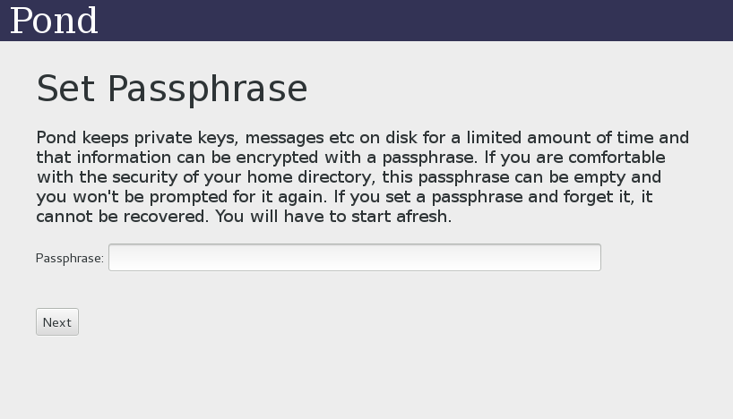

Before running Pond, you need to have Tor running. Pond makes all connections over Tor. Simply having the browser bundle running should be sufficient. There's no danger to having Pond running without Tor, it'll simply not work.
When first starting Pond, you'll be prompted to set a passphrase for Pond's state file, which should look like this:
The state file contains all of Pond's persistent state and may be encrypted with a passphrase if you wish. If you set a passphrase and then forget it, there is no recovery mechanism. If you believe that the security of your home directory is sufficiently good then you may omit the passphrase completely.
The state file should not be copied. Pond depends on the ability to delete past information and making copies of the state file may allow information that should have been deleted, to be recovered. Additionally, Pond is not designed to operate concurrently on multiple computers.
After setting the passphrase (or not), you may be prompted to setup TPM storage if your computer has a TPM chip. Pond depends on being able to erase old information but it is not clear how well modern computers, using SSDs or log-structured filesystems, are able to erase anything. Without some form of special storage, such as a TPM chip, it may be possible to recover “deleted” messages given the passphrase.
Once the passphrase and TPM have been configured, you'll be prompted to create an account on a Pond server.
A Pond server accepts and stores messages for you since most computers are not constantly connected to the Internet. Anyone can run a Pond server, and you can even run your own if you wish, but there is a default Pond server that is already filled out should you wish to use that one.
Note that one doesn't provide a name, email or any other identifying information when creating a Pond account. A Pond server knows almost nothing about you. For details, see the threat model document.
In order to prevent abuse, the Pond server may ask your computer to perform a certain amount of work before allowing an account to be created. Please be patient, esp on slower computers.
Creating the account will be the first time that Pond tries to connect through Tor and so any errors at this point are likely caused by a problem with network. Ensure that Tor is running and listening for SOCKS5 connections on port 9050 or 9150.
Once your account has been created, and every time you subsequently start Pond, you'll see the main screen.
Unlike regular email, Pond is a closed system. This means that you cannot send messages to another Pond user without establishing a relationship with them first. (This also means that nobody unwelcome can send messages to you - i.e. there is no spam.)
So the first order to business is to add a contact by clicking on the “Add” button. (If you don't know anyone else using Pond then I'm afraid that you're rather stuck - such is the nature of network effects.)
Feel free when choosing a name for the contact. The name must be locally unique, but will only be used to refer to the contact. The name that you choose for a contact will not be shared with anyone else.
There are two methods of establishing a new contact - manual keying and shared secrets. Manual keying is suitable if you already have an existing secure channel to the contact, i.e. you have each other's PGP keys, or have OTR setup. However, most people should select “Shared secret”.
WARNING: A manual key exchange message must be confidential as well as authentic. The key exchange message contains an authorisation key that allows the contact to send messages to you as well as public key material. Thus you must exchange it in a confidential as well as authentic manner. Don't put it on pastebin.
Shared secret keying allows one to bootstrap secure communication from some shared secret. This may be a random string generated by one of the parties, a physical meeting or perhaps a secure, but low capacity, channel.
Shared secret keying involves contacting a central server (using Tor) and performing a key exchange based on the shared secret. This means that, so long as a MITM attack isn't performed against the shared secret in real time then it's secure for the future. Once the key exchange is complete, the shared secret doesn't need to be strongly protected: possession of it might disclose that a key exchange was performed, but it doesn't allow decryption, impersonation, etc.
In the interests of practicality, it's pretty secure to exchange a shared secret over IM or email. One of the parties can generate such a secret by clicking the “Generate” button:
Once you have sent/entered the secret, click “Begin” to start the process. You should expect the shared secret key exchange to take 30-60 seconds, even if both parties start it at exactly the same time. It is fine to close Pond while a shared secret keying is in progress: the state of the process will be saved and it's not necessary for both parties to be online at the same time.
Shared secret exchanges also support using secrets exchanged from a physical meeting:
In the screen shot above, the shared secret is a combination of a password, cards and a time. The key exchange only ensures that you end up connected to someone else who knows the same shared secret. You have to ensure that the only such person is who you intend it to be.
The use of a password is hopefully obvious. However, since humans are bad at generating and remembering complex passwords, a method using one or two decks of playing cards is also supported. In order to do this, one party must bring a fresh deck of playing cards to the meeting. Then they must be shuffled (7 riffle shuffles is recommended), cut into rough halves and then one person takes each half. Although the two halves will be different, either is sufficient to determine the contents of the other assuming that the deck was complete to start off with.
(Using one deck is approximately 49 bits of entropy, two decks is about 100.)
Agreeing on a common time (to the minute) for the meeting is recommended, even though it may be public information, because it serves as a salt.
Once a contact has been setup, messages can be exchanged. Messages are ephemeral. Pond is only software and cannot force the recipient of a message not to retain it, but it is the social norm, and the default in the software, that messages are permanently erased a week from receipt.

When typing and attaching files, you'll see that the size counter changes. Pond messages are always a fixed size in order to make them indistinguishable. But while a short message can always be padded out to the correct size, a long message cannot always be compressed down to fit. While it's unlikely that you'll hit the limit while typing, attachments can quickly balloon the size of a message.
In order to attach a file to a message, click the plus. You'll be prompted to select a file. If the file is small enough then it'll be included in the message directly. Otherwise you'll be prompted to either save an encrypted version of the file, or to upload the file. These are both methods where encryption is used to separate the bulk transfer of the file from from the security of that transfer. By encrypting the file, the problem of securing the transfer is reduced to the problem of securing the encryption key, and the encryption key is small enough to fit in the Pond message. The bulk transfer is called a “detachment”.
By opting to save an encrypted version of the file, you are taking on the job of getting the encrypted file to the recipient yourself. For huge files, this may be the only method. Perhaps you'll put the file on a USB stick and physically hand it to them.
For modest sized detachments (up to a few megabytes - i.e. something that you might attach to an email), you can upload it to your Pond server. The advantage of this is that the upload will occur over Tor and that it's convenient. Your Pond server will have a limit on the amount that it'll store for you however and be aware that the upload is visible to anyone watching your network connection. The contents of the upload are hidden, of course, but the rough size of the file can be observed during the transfer. Likewise, the rough size of the file can be observed when the recipient downloads it.
When you send a message, it'll appear in your outbox with a red dot.

The red dot means that the message hasn't been transmitted yet. Pond doesn't transmit messages as needed because that would disclose when messages were being sent. Instead it transmits messages at random, whether there's anything to be sent or not. When there's a real message pending, it has to wait until the next randomly timed slot, which could be many minutes.
Once the message has been transmitted, the dot will turn yellow. The dot will turn green when the message has been “acknowledged”. An acknowledgment occurs either when a reply to the message is received, or a special acknowledgment message is received (which is actually just an empty reply). Acknowledgments exist because it's often difficult to know whether a message has been read and replying to every one can be awkward. An acknowledgment is never sent automatically, but you should expect to acknowledge (or reply to) every message that you receive.
Eventually, received messages will turn grey. This means that they are within one day of being deleted. Received messages that have a pink background are those that have already expired, but the expiration occured when Pond wasn't running. Pond doesn't delete messages for the first five minutes after startup and such messages are shown with a pink background.